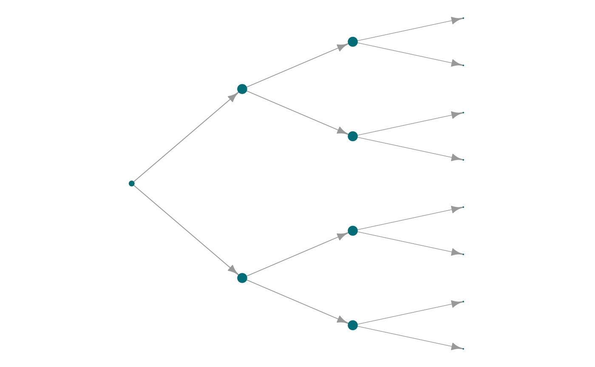

Rotates a tree layout by -90 degrees to produce a horizontal orientation.
This is particularly useful for hierarchical visualizations where a left-to-right structure
is preferred over the default top-to-bottom tree layout.
Usage
layout_horizontal_tree(graph)
Arguments
- graph
An igraph object representing the input graph, or a data frame
containing a symbolic edge list in the first two columns. Additional columns are
considered as edge attributes.
Value
A numeric matrix with 2 columns representing x and y coordinates of each node in the layout.
This matrix can be passed to plot.igraph() or other plotting functions.
Examples
g <- igraph::make_tree(15)
coords <- layout_horizontal_tree(g)
head(coords)
#> [,1] [,2]
#> [1,] -3 1.83697e-16
#> [2,] -2 -2.00000e+00
#> [3,] -2 2.00000e+00
#> [4,] -1 -3.00000e+00
#> [5,] -1 -1.00000e+00
#> [6,] -1 1.00000e+00
plot_Net(g, layout = coords)
